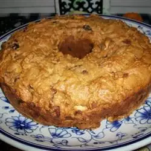

Brack

Description
Barmbrack or brack is a traditional Irish fruitcake or fruit loaf. It was traditionally served at Halloween but is now eaten all year round. It's delicious as-is or spread with a little butter. It is tradition to add objects to the barmbrack which symbolize certain things for the person who receives it in their slice: a coin — wealth or good fortune; a ring — will marry within the year!
Ingredients
- chopped dried mixed fruit
- 1 ½ cups hot black tea
- 2 ½ cups flour
- 1 teaspoon ground cinnamon
- ½ teaspoon ground nutmeg
- ½ teaspoon baking soda
Directions
- Soak dried fruit in hot tea for at least 2 hours to overnight.
- Preheat the oven to 350 degrees F (175 degrees C). Generously grease a round 9-inch cake pan or 9x5-inch loaf pan. Stir flour, cinnamon, nutmeg, and baking soda together; set aside.
- Lightly beat egg in a large bowl; mix in sugar, marmalade, orange zest, and tea-soaked fruit until well combined. Gently fold in the flour mixture until just combined, then pour into the prepared pan.
- Bake in the preheated oven until a toothpick inserted into the center of the cake comes out clean, about 1 hour. Cool in the pan for 2 hours before removing to a wire rack to cool to room temperature. Press the objects of choice into the cake through the bottom before serving.